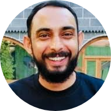

|

|
JOSEPH VARGHESE
MRI & PAC Technichal Consulatant
Skilled service engineer with highly developed technical and interpersonal skills for GE MRI models to service, install, periodic maintenance, training and online technical support
|
EXPERIENCE
JULY 2018 – PRESENT
MRI TECHNICAL CONSULTANT – SERVICE & INSTALLATION
- Installation, Refurbishment, Technical support for MRI
- Completed Installation and calibration of Mobile MRI – IRAQ
- Service Maintenance for MR in Turkey- Istanbul, Ankara, Gaziantep, Konya
- Technical support for customer issues
- De-install MR system - Diyarbakir
NOVEMBER 2015 – JUNE 2018
REMOTE SERVICE SPECIALIST - MR, GE HEALTHCARE
- Remote Service Delivery of MR Modality for South Asia and US, Canada GE
- Supporting Customer and Field Service calls for SA and USCAN
- Leading the Proactive support and Delivery process for MR modality- Worked with predictive algorithms to proactively prevent the failures
- Remote fix rate SA/USCAN– 35%
- Trained Field Engineers/Engineering/Manufacturing team on MR
- Provided onsite technical support for customer escalations (CSO) in India andColombo
- Shared information with the Modality Engineering to drive product quality and serviceability
MARCH 2013 – NOV 2015
SENIOR CUSTOMER SERVICE ENGINEER, GE HEALTHCARE
- Carried out various MR Installations with end to end ownership for Optima and HD systems
- Total system level troubleshooting on complex multi-symptom problems for Optima and HD systems.
- Resolved many critical issues at BGS Global, NH Bangalore, Mysore, KMC Manipal, Padmashree independently within shortest time
- Participating in sales opportunities such as contract renewals and assist with promoting and implementing revenue programs
- Given OJT to New FEs on MRI and supported in major troubleshooting
- Done Magnet works independently, such as coldhead replacement, Ramping,Shimming and other calibrations
- Led the MR team in Karnataka region
JULY 2011 – MARCH 2013
CUSTOMER SERVICE ENGINEER, GE HEALTHCARE
- Performing preventative maintenance, service and repair on MRI equipment for 1.5T and 3.0T
- Contributed significantly in maintaining the KRA's of the LCT at the highest level by keeping the performance at the highest level. Great rigor demonstrated on PMS completion, PM 7, FRFT, ETTR & IBIS
- Interfaced with clinical Apps team and Engineering teams for facilitating upgrades and customer issues
- Maintaining customer service logs and internal service records
- Maintain daily communications with customers to ensure resolution and proper follow up, leading to customer satisfaction
- Working as a member of the service team to provide efficient service delivery to all accounts within the territory
Contact me!